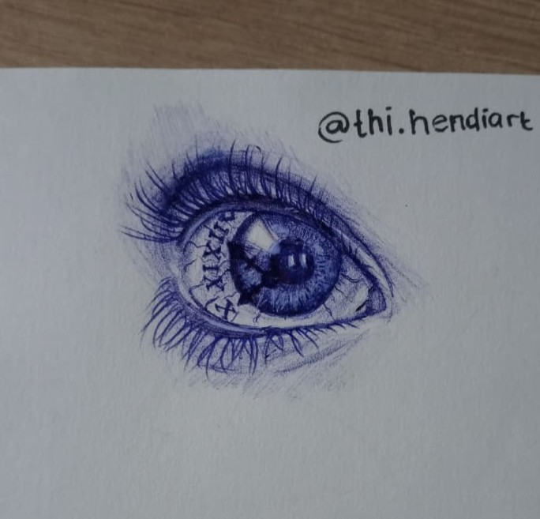
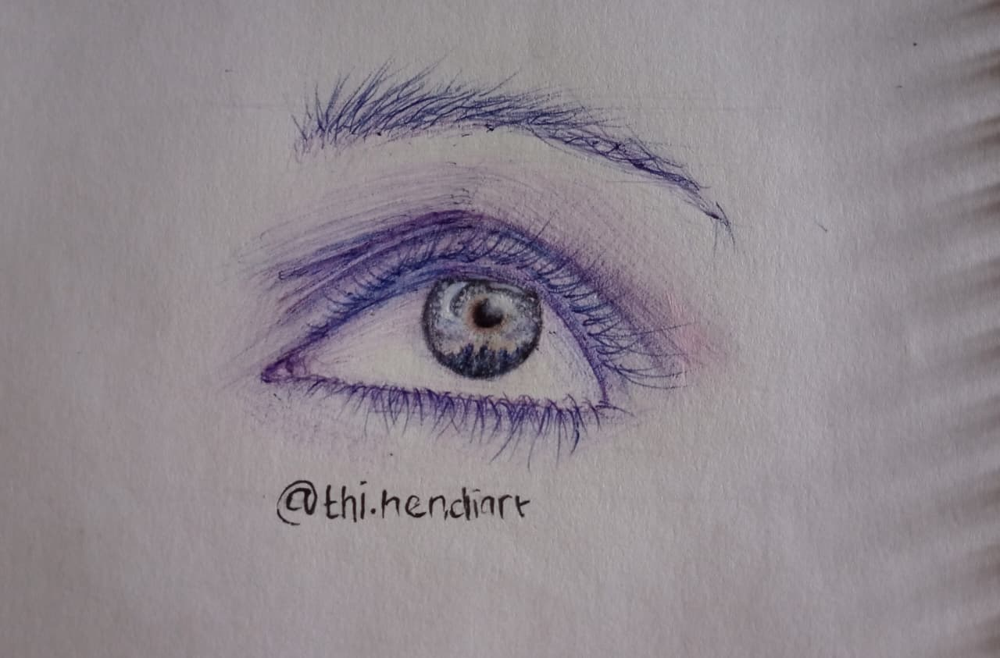
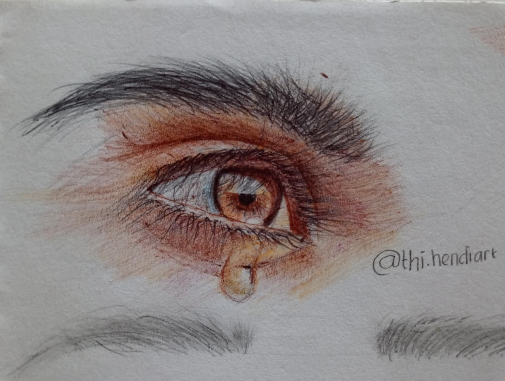
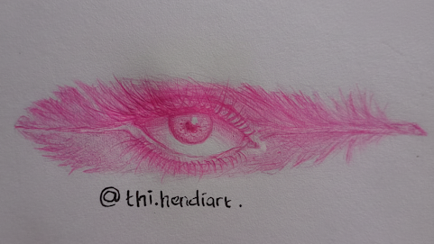
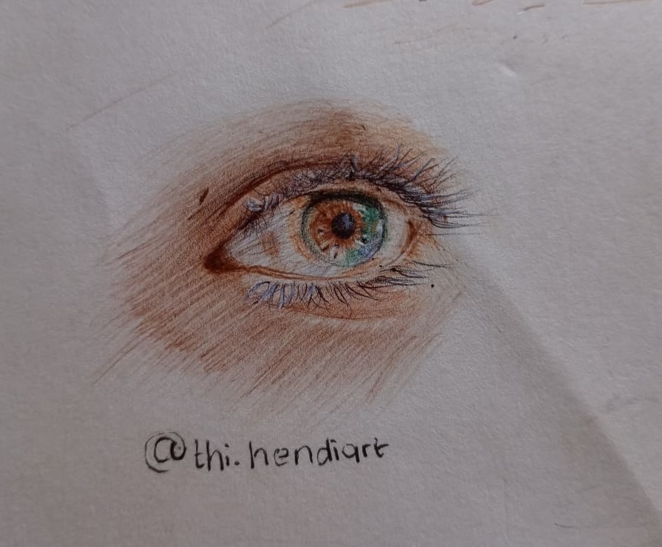

Ruang Karya & Eksperimen
Menjelajahi kelembutan gradasi warna dan kedalaman tatapan mata melalui arsiran pena, serta eksperimen rekayasa web interaktif yang bernyawa.

Mempesona
Eksplorasi kelembutan dan kilau bibir seorang perempuan, diwujudkan secara menyeluruh menggunakan bolpoin 10-warna melalui percampuran arsiran halus.

Jendela Jiwa
Mata adalah cermin batin yang merekam semesta. Digambar dengan ketelitian bolpoin biru tua untuk menonjolkan kedalaman iris dan pantulan cahaya alami.

Pemandangan Tersembunyi
Terkadang, seluruh semesta bisa dirasakan dalam satu kedipan tatapan. Menekankan ketegasan bulu mata dan kelembutan bayangan kelopak mata.

Realisme Mata
Menangkap emosi dan ekspresi yang jujur. Menguji batas perpaduan arsiran multi-warna demi mencapai ilusi tekstur dan kehangatan yang hidup.

Feathered Vision
Melihat dunia dengan kelembutan dan keringanan sehelai bulu. Sebuah metafora tentang kebebasan berimajinasi dan ketenangan pikiran.

Pandangan Berwarna
Eksplorasi spektrum warna pada iris dengan sentuhan gradasi hijau kebiruan yang kontras, menghadirkan karakter tatapan yang memikat.
Generative Ink Waves Engine
“Mengubah formula matematika trigonometri menjadi gelombang sutra dan partikel udara yang mengalir merespons sentuhan kursor.”
Generative Ink & Wave Canvas
Arsitektur visual portofolio ini: simulasi gelombang sutra dinamis berbasis Canvas 2D, perspektif miring 3D organik, dan interaksi kursor tetesan tinta.
Automasi Alur Kerja Terintegrasi
“Menghubungkan layanan API dan memprogram otomasi tugas berulang agar kreativitas manusia dapat tercurahkan seutuhnya.”
Automated Workflow Pipeline
Pemanfaatan platform automasi modern (n8n) untuk menghubungkan webhook, manipulasi data JSON secara dinamis, dan sinkronisasi lintas platform secara otomatis.